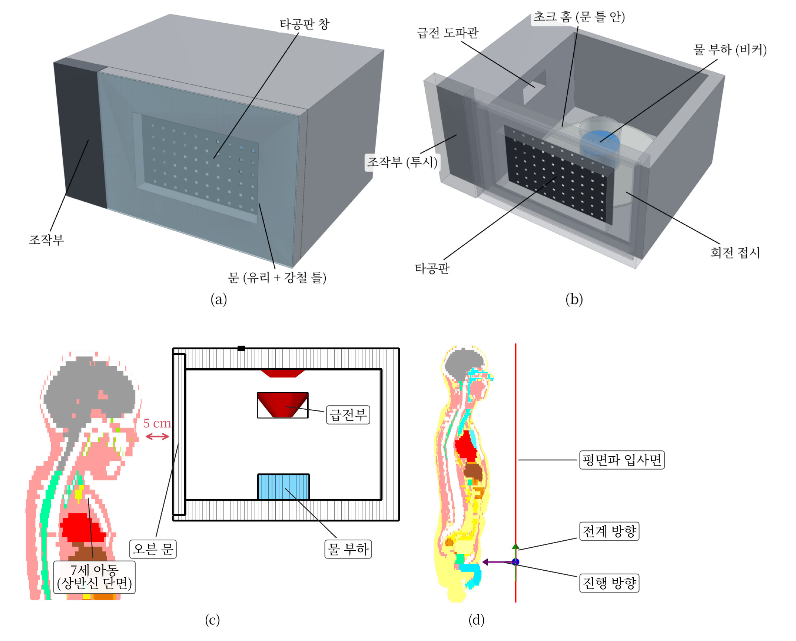
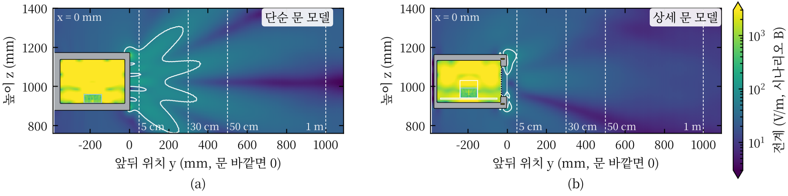
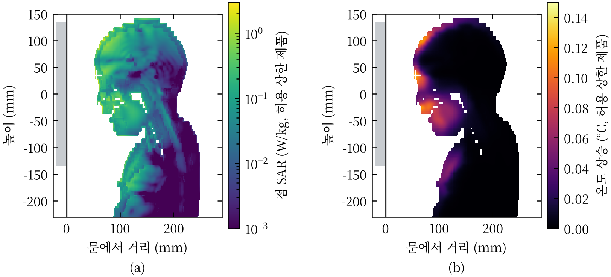
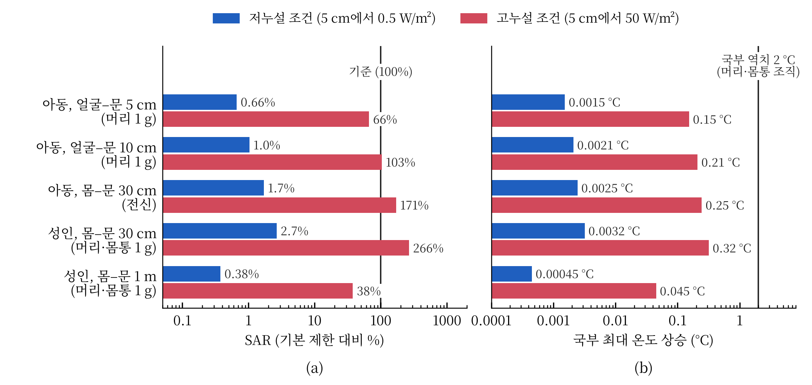

제1회 라이너 스콜라 연구공모전
작성일: 2026년 11월 ○일
이 연구는 “작동 중인 전자레인지 앞에 서 있으면 해롭다”는 통념을 열적 영향의 관점에서 검토하였다. 노출 기준의 근거, 누설 측정 자료, 인체 흡수·온도 계산 연구를 비교하고, 문헌에 없는 실제 사용 거리의 인체 흡수량은 3차원 전자기·열 해석으로 탐색적으로 보완하였다. 누설은 측정 자료의 평균 수준인 저누설 조건(문 외면 5 cm에서 0.5 W/m²)과 사용 중 허용 상한인 고누설 조건(50 W/m²)으로 나누었다. 저누설 조건에서 30 cm–1 m에 선 성인과 7세 아동, 문에 얼굴을 댄 아동의 비흡수율(SAR)은 인체보호기준의 약 3% 이하였고, 온도 상승은 열적 위해가 보고된 수준의 1/100 미만이었다. 고누설 조건에 불리한 가정을 겹치면 SAR은 기준에 근접하거나 이를 넘었으나, 계산된 국부 온도 상승은 0.4 °C 미만이었다. 따라서 검토한 조건에서 이 통념은 열적 위해의 측면에서 지지되지 않는다. 다만 누설이 큰 제품은 기준 대비 여유가 없어 추가 노출 평가가 필요하다. 해석은 한 가지 오븐 형상과 두 인체 모델에 한정되며 격자 수렴과 실측 검증을 거치지 않았고, 비열적 장기 영향은 판단을 유보하였다.
전자레인지는 2.45 GHz 마이크로파로 음식 속 물을 데운다. 이 전자파가 문틈으로 새어 나와 인체에 해를 줄 수 있다는 우려가 있으며, 작동 중에는 전자레인지 앞에 서 있지 말라는 조언이 지금도 흔하다. 2.45 GHz 광자의 에너지는 약 10⁻⁵ eV로 분자 결합을 직접 끊지 못하며, 지금까지 확인된 위해 기전은 조직 가열이다. 비열적 영향에 대한 주장은 제2장 제1절에서 따로 검토한다.
관련 기준은 두 계통으로 나뉜다. 제품 방출 기준은 오븐 외면 5 cm의 전력밀도(단위 면적을 지나는 전자파 전력)를 제한한다. 미국 연방 규정은 판매 전 10 W/m², 판매 후 50 W/m²를 [1], 국제 가전 안전 규격은 50 W/m²를 [2] 상한으로 둔다. 인체보호기준은 몸 1 kg이 흡수하는 전력인 비흡수율(SAR, W/kg)을 제한한다 [3], [4]. 5 cm 측정값만으로는 사람이 서는 위치의 노출이나 몸이 흡수하는 양을 알 수 없다. 또 인체보호기준의 기본 제한은 위해가 관찰된 수준에 감소계수를 적용한 값이므로, 기본 제한을 넘는 것이 곧 위해를 뜻하지는 않는다.
이에 따라 이 글은 두 질문을 구분한다. (1) 가정용 전자레인지 앞 30 cm–1 m에 선 성인·아동과 문에 얼굴을 5–10 cm까지 댄 아동의 SAR은 인체보호기준 대비 어느 수준인가? (2) 그 노출로 인한 온도 상승은 열적 위해가 보고된 수준에 이르는가? 이 글에서 “해롭다”는 (2)의 의미, 곧 열적 위해가 생길 만큼 몸이 가열되는 것으로 정의한다.
대상은 2.45 GHz 가정용 전자레인지의 문 누설이며, 누설 크기는 측정 자료의 평균 수준과 사용 중 허용 상한 수준을 모두 다루었다. 비열적 영향은 2024년 WHO 의뢰 체계적 문헌고찰(암 [5], 자각 증상 [6]), 2025년 실험동물 체계적 문헌고찰 [7], 국제암연구소(IARC) 분류 [8]로 검토하되, 이들 근거가 주로 휴대전화나 동물의 장기 노출에서 나왔다는 점을 함께 고려하였다. 인터록(문이 열리면 전원을 끊는 장치) 고장으로 문이 열린 채 동작하는 상황은 결론의 범위 밖으로 두었다.
문헌 검토. 2026년 10월 19–22일에 웹 검색엔진과 학술 데이터베이스 서지 레코드(PubMed, IEEE Xplore, IOP, 출판사 페이지)를 통해 “microwave oven leakage survey”, “microwave oven leakage SAR”, “2.45 GHz whole-body SAR child plane wave”, “lens temperature 2.45 GHz”, “ICNIRP basic restriction rationale”, “전자레인지 전자파 누설” 등의 검색어로 1970–2025년 문헌을 찾았다. 포함 기준은 (1) 가정용 전자레인지 누설의 측정·해석, (2) 2.45 GHz 부근 인체 흡수 또는 온도 계산, (3) 기준 문서와 그 근거 문헌이다. KCI, RISS, DBpia는 검색하지 못하였다. 초안은 라이너 스콜라의 심사 기능으로 연구 질문, 근거의 신뢰성, 인용의 적절성을 점검하였고(2026년 10월 27일), 그 지적에 따라 10월 27–29일에 2000년 이후 측정 조사와 반대 근거를 추가로 찾았다. 문헌 탐색, 서지 확인과 초안 작성에는 AI 도구(Anthropic Claude)도 사용하였다. 인용 수치는 문헌마다 확인한 범위(전문, 초록, 기관 안내문; 표 2) 안에서 출처와 대조하였고, 해석 수치는 해석 결과 파일과 대조하였다.
수치 해석(탐색적 보완). 문헌에는 실제 사용 거리에서 사람이 흡수하는 양을 직접 다룬 연구가 드물어, 상용 전자기장 시뮬레이터(시간영역 유한적분법) [9]로 이를 계산하였다. 오븐은 23 L 단독형 제품의 공개 사양 10에 맞추어 두 가지로 만들었다. 단순 문 모델은 문 둘레 전체에 틈을 두어 누설을 크게 잡은 모델이고, 상세 문 모델은 유리, 타공판(작은 구멍이 뚫린 금속판), λ/4 초크(문 둘레로 새는 전자파를 상쇄하는 홈)를 넣은 모델이다(그림 1). 상세 문 모델도 시판 제품의 문 구조를 그대로 재현한 것은 아니다. 누설 크기는 방출 기준의 시험 조건(물 275 mL, 외면 5 cm)에서 누설 측정기의 검출 면적(약 25 cm²)으로 평균한 전력밀도의 최댓값으로 정하였다. 저누설 조건은 측정 자료의 평균 수준인 0.5 W/m²(허용 상한의 1%), 고누설 조건은 사용 중 허용 상한인 50 W/m²이다. 형상·물성·열전달 계수를 고정한 이 모델에서 SAR과 온도 상승은 누설 전력에 비례하므로 다른 누설 수준으로 환산할 수 있다. 다만 고장으로 형상이나 방사 패턴이 바뀌는 경우까지 이 환산이 검증된 것은 아니다.
인체는 시뮬레이터에 포함된 해부학적 복셀(3차원 화소) 모델인 성인 남성(38세, 176 cm)과 7세 여아(115 cm) [9]를 썼다. 거리는 문 바깥면에서 몸 앞면까지로 정의하였다. 30 cm 이상에서는 오븐 단독 해석에서 전력 흐름과 전계로 환산한 전력밀도가 4% 이내로 같아, 인체에 평면파(한 방향으로 고르게 진행하는 전자파, 전계는 키 방향)를 쬐어 1 W/m²당 SAR을 구하고 몸 앞 전력밀도를 곱하였다. 이 평면파 등가는 오븐과 인체의 상호작용과 공간 분포를 단순화한 근사이다. 몸 앞 전력밀도는 두 가지로 썼다. 현실적 추정은 상세 문 모델의 몸 앞 평균을 정면에서 쬔 경우이고, 불리한 가정은 단순 문 모델의 몸 앞 최댓값을 몸 전체에 적용하고 입사 방향 ±30° 중 가장 큰 값을 택한 경우이다. 불리한 가정은 검토한 조건 가운데 큰 값을 주는 시나리오이며, 가능한 모든 조건의 엄밀한 상한은 아니다. 얼굴을 문에 댄 5–10 cm는 평면파로 대신할 수 없어 오븐(단순 문 모델)과 아동 상반신을 함께 해석하였다. SAR은 1 g·10 g 정육면체 평균과 전신 평균으로 구하였다. 국부 온도 상승은 Pennes 생체 열전달 방정식 [11]을 머리·목 영역에서 3차원 정상상태로 풀어 구하였고, 심부 체온 상승은 30분간 열 손실이 없다는 단열 가정으로 추정하였다.

그림 1. 해석 환경. (a) 상세 문 모델의 겉모습과 (b) 천장을 떼어 낸 내부: 문에는 유리 뒤에 타공판이 있고 문 둘레에 초크 홈이 있으며, 조리실에는 회전 접시와 물 부하(275 mL), 옆벽에는 전자파를 넣는 급전 도파관이 있다. 모델에서는 조작부가 왼쪽에 있다(참고한 제품과 좌우 반대). (c) 문에 얼굴을 댄 7세 아동의 근접 해석(측면 단면, 얼굴–문 약 5 cm, 단순 문 모델). (d) 30 cm 이상에 선 성인의 평면파 해석. (c), (d)의 인체 색은 조직 종류이다 [9]. 출처: 본 연구.
노출 기준은 동물 실험에서 확인된 가열 효과에 근거한다. ICNIRP가 정리한 실험에서 학습 과제를 하던 쥐와 원숭이는 전신 평균 SAR 약 4 W/kg에서 과제를 멈추었고, 이때 심부 체온은 약 1 °C 올랐다 [12]. 국제비전리방사선방호위원회(ICNIRP)는 이를 전신 노출의 역치로 보고 일반인에 감소계수 50을 적용해 전신 0.08 W/kg을 기본 제한(몸 안에서 넘지 말아야 할 값)으로 정하였다 [3], [12]. 국부 노출은 국부 온도 상승을 근거로 하며, 피부·사지 등(1형 조직)은 5 °C, 머리·몸통 안쪽 조직(2형 조직)은 2 °C 상승을 건강 영향의 운영 역치로 본다 [3]. 몸 밖에서 재기 쉬운 참고 수준(2.45 GHz에서 10 W/m²)은 기본 제한을 지키도록 정한 값이다 [3]. 국부 기본 제한은 국내가 머리·몸통 1 g 평균 1.6 W/kg, ICNIRP가 10 g 평균 2 W/kg이다 [3], [4]. 평균 질량이 달라 두 값의 엄격성을 숫자만으로 비교할 수는 없으며, 이 글은 국내 기준(1 g)과 비교하였다. 이 비교는 기본 제한값과의 물리적 비교이며, 국부 기준이 가전제품에 법적으로 적용된다는 뜻은 아니다. 또 ICNIRP의 평균 시간(전신 30분, 국부 6분)보다 조리 시간이 짧으면 시간 평균 노출은 이 글의 값보다 작아진다.
눈은 혈류가 적어 열에 취약하므로 별도로 연구되었다. 2.45 GHz를 100분 쬔 토끼에서 수정체가 약 41 °C에 이를 때 백내장이 생겼고 [13], 사람 눈 모델 계산에서는 수정체 온도 상승 약 3 °C를 백내장 유발 역치로 본다 [14]. 이 글에서 쓴 기준과 역치를 표 1에 정리하였다.
표 1. 비교에 쓴 기준과 역치 (출처: [1]–[4], [12], [14] 정리)
| 구분 | 제한 대상 | 값 |
|---|---|---|
| 제품 방출 기준 [1], [2] | 오븐 외면 5 cm의 전력밀도 | 50 W/m² (미국은 판매 전 10 W/m²) |
| 인체보호기준, 전신 [3], [4] | 몸 전체 평균 SAR | 0.08 W/kg (역치 4 W/kg [12]의 1/50) |
| 인체보호기준, 국부 [3], [4] | 몸 일부의 SAR | 1.6 W/kg (국내, 1 g 평균) / 2 W/kg (ICNIRP, 10 g 평균) |
| 열적 영향 역치 [3], [14] | 온도 상승 | 심부 1 °C, 국부 2 °C(머리·몸통 조직)·5 °C(피부·사지), 수정체 약 3 °C |
비열적 영향에 대해서는 근거가 엇갈린다. IARC는 2011년 무선주파수 전자기장을 “사람에게 발암 가능성이 있는” 2B군으로 분류하였고, 주로 휴대전화 장기 사용자의 신경교종 위험 증가 보고에 근거하였다 [8]. 2024년 WHO 의뢰 체계적 문헌고찰은 일반인 노출과 암의 관련(관찰 연구) [5], 단시간 노출과 자각 증상의 관련(유발 실험) [6]을 찾지 못하였다. 반면 2025년 실험동물 체계적 문헌고찰은 장기 노출에서 신경교종과 심장 신경초종이 증가한다는 근거의 확실성을 높음으로 평가하였다 [7]. 이 근거들은 휴대전화나 동물의 장기·반복 노출에서 나온 것이어서 몸에서 떨어진 전자레인지의 단시간 저누설 노출에 그대로 옮기기 어렵다. 따라서 비열적 영향은 판단을 유보하고, 정량 비교는 열적 기준에 한정한다.
연방 방출 기준이 시행되기 전인 1970년 미국 아칸소주 조사에서는 일부 제품이 당시 업계 자율 기준(100 W/m²)을 넘었다 [15]. 기준 시행 후 캐나다 보건부의 2000년 조사에서는 판매 전 제품 60대가 모두 기준을 지켰고, 사용 중 제품 약 100대 중 1대가 사용 중 허용 상한을 넘었다 [16]. 2014년 팔레스타인 가정용 오븐 115대 조사에서는 5 cm와 20 cm에서 모든 제품이 일반인 기준보다 낮았다 [17]. 독일 연방방사선방호청(BfS)은 1997년 측정에서 가정용 제품의 누설이 평균적으로 허용 상한의 약 1%였고, 30 cm에서는 표면 값의 5–10%로 줄어든다고 안내한다 [18]. 국내에서는 국립전파연구원이 전자레인지를 30 cm에서 측정해 2.4 GHz 대역 노출이 인체보호기준의 약 7.2%라고 안내하였다 [19].
이 자료들은 시대, 표본, 측정 위치와 측정량이 달라 수치를 합칠 수 없다(표 2). BfS의 1%는 기준점(표면 또는 5 cm)이 분명하지 않고, 국내 7.2%는 전계의 비인지 전력밀도의 비인지 밝혀져 있지 않다. 평균값은 누설이 큰 일부 제품을 대표하지 않으며, 해외 조사가 현재 국내 제품의 분포를 대표한다고 볼 수도 없다. 이 글의 저누설 조건은 이런 한계를 가진 평균 수준의 대표값이다. 자료 간 공통점은 기준 시행 이후 제품의 누설이 대체로 허용 상한보다 낮고 거리에 따라 빠르게 준다는 것이다.
표 2. 선행 자료의 조건, 결과와 적용 한계 (출처: 각 문헌)
| 자료 | 조건 | 핵심 결과 | 확인 수준·적용 한계 |
|---|---|---|---|
| 미국 1970년 조사 [15] | 기준 시행 전 사용 중 제품 | 일부 제품이 당시 업계 기준(100 W/m²) 초과 | 초록. 기준 시행 전 제품 |
| 캐나다 2000년 조사 [16] | 판매 전 60대, 사용 중 약 100대 | 판매 전 모두 적합, 사용 중 1대 허용 상한 초과 | 기관 보고. 한 지역의 과거 표본 |
| 팔레스타인 2014년 조사 [17] | 가정용 115대, 5·20 cm | 모두 일반인 기준보다 낮음 | 초록. 학술대회 발표 |
| 독일 BfS 안내 [18] | 1997년 측정, 기준점 불명확 | 평균 누설은 허용 상한의 약 1%, 30 cm에서 5–10% | 기관 안내문. 평균값 |
| 국립전파연구원 안내 [19] | 30 cm, 2.4 GHz 대역 | 인체보호기준의 약 7.2% | 기관 안내문. 표본 수·측정량 불명 |
| ARPANSA 예비 측정 [20] | 겉보기 손상이 없는 제품 포함 | 방출 기준을 지켜도 SAR 기준 초과 가능 | 초록. 측정 조건 미확인 |
| 접촉형 문 해석 [21] | 흉부·심박조율기 모델, 10 cm 이내 | 10 g SAR·온도는 기준 이하, 유도 전압은 기기 감도 초과 | 초록. 흉부에 국한 |
| 눈 해석 [14] | 눈 모델, 50 W/m² | 최대 온도 상승 0.26 °C(5.8 GHz) | 초록. 눈에 국한 |
| 아동 전신 해석 [22], [23] | 아동 복셀 모델, 참고 수준 평면파 | 기본 제한을 약 30–45% 초과 가능 | 초록. 최근 표준 모델에서는 최대 약 16% [3] |
해석에서는 누설이 허용 상한인 경우에도 참고 수준을 넘는 영역이 단순 문 모델에서 문 앞 약 36 cm, 상세 문 모델에서 약 5–13 cm 안에 머물렀다(그림 2, 검출기 보정 전). 상세 문 모델의 누설은 문과 조작부 사이의 틈에 몰렸고, 최대 세기는 30, 50, 100 cm에서 5 cm 값의 6.5%, 2.9%, 1.1%였다. 이는 BfS의 5–10%와 비슷하나 기준점이 달라 검증은 아니다. 단순 문 모델은 26%, 13%, 3.9%였다. 30 cm에서 저누설 조건의 최대 전력밀도는 상세 문 모델 0.038 W/m², 단순 문 모델 0.16 W/m²였다. 국내 7.2%를 공개 문구만으로 두 방식으로 해석하면, 전계의 비로는 0.052 W/m²로 이 범위에 들고 전력밀도의 비로는 0.72 W/m²로 그 5–19배이다. 이는 원 측정의 뜻을 확인하지 못한 상태의 민감도 점검이다. 해석 결과는 5 cm 측정값을 그대로 인체 노출로 읽으면 안 되는 이유도 보여 준다. 5 cm는 전계와 자계의 비가 자유공간 값(377 Ω)과 다른 근역장이어서 전계로 환산한 전력밀도가 실제 전력 흐름보다 최대 1.9배 컸다. 또 누설이 거리 제곱보다 완만하게 줄어, 역제곱 법칙을 적용하면 단순 문 모델에서 30 cm–1 m 노출을 10–15배 과소평가하였다.

그림 2. 오븐 전면의 누설 전계 분포(오븐 중앙을 지나는 측면 단면, 고누설 조건). 색은 전계의 세기(V/m, 로그 눈금)이고, 회색은 금속, 노란 부분은 오븐 안이다. 흰 실선 안쪽은 일반인 참고 수준(10 W/m²)을 넘는 영역이며, 흰 점선은 문에서 5, 30, 50, 100 cm 위치이다. (a) 단순 문 모델, (b) 상세 문 모델. 저누설 조건의 전력은 이의 1/100이다. 검출기 면적 보정 전의 분포이며, 보정하면 전계가 약 1.1배이다. 출처: 본 연구 해석.
선행 계산 연구는 특정 상황만 다루었다(표 2). 접촉형 문 앞 10 cm 이내의 흉부 모델에서 국부 SAR(10 g)과 온도 상승은 기준보다 낮았으나, 심박조율기 전극의 유도 전압은 기기의 감도 설정을 넘었다 [21]. 눈 모델에 50 W/m²를 쬔 계산에서 ISM 대역의 최대 온도 상승은 0.26 °C(5.8 GHz)였다 [14]. 아동은 같은 전력밀도에서 전신 SAR이 성인보다 커 참고 수준에서 기본 제한을 약 30% [22]에서 최대 45% [23] 넘을 수 있다는 보고가 있고, 그 폭은 인체 모델과 자세에 따라 다르다 [24], [25]. GHz 대역 흡수는 체표면적에 좌우되고 아동은 체중당 체표면적이 크기 때문이다 [26], [27]. ICNIRP 2020은 최근 표준 아동 모델에서는 초과가 최대 약 16%이고 아동은 열 방출이 효율적이어서 온도 상승이 성인 허용 수준을 넘지 않는다고 보아 참고 수준을 유지하였다 [3]. 이 연구들은 대상, 지표, 노출 조건이 서로 달라 수치를 그대로 비교할 수 없고, 전자레인지 앞 실제 거리의 전신·얼굴 흡수량은 제시하지 않았다.
저누설 조건에서 계산된 SAR은 모든 거리와 인체 모델에서 기본 제한의 약 3% 이하였다(그림 4(a)). 가장 큰 값은 불리한 가정에서 30 cm에 선 성인의 머리·몸통 1 g SAR(2.7%)이었고, 같은 가정에서 아동의 전신 SAR은 1.7%였다. 현실적 추정은 이보다 약 10–20배 작았다. 입사 1 W/m²당 전신 SAR은 아동이 성인의 1.6–1.7배였고, 참고 수준에서 아동은 기본 제한의 109%로 선행 연구와 방향이 같았다. 비스듬한 입사에서 전신 SAR은 줄었으나 얼굴의 국부 SAR은 최대 1.34배(성인)–1.65배(아동) 커졌다. 기본 제한에 도달하려면 누설이 저누설 조건의 약 38배(성인 머리·몸통 1 g)와 59배(아동 전신)가 되어야 한다. 다른 인체 모델에서는 머리 1 g SAR이 15% 컸으므로, 두 효과가 겹친다면 앞의 배수는 약 33배로 줄어든다. 국내 공개 수치를 전력밀도의 비(0.72 W/m²)로 해석해 몸 전체에 적용해도 SAR은 기본 제한의 9% 이하였다. 온도 상승도 작았다. 국부 최대 온도 상승은 가장 불리한 입사 방향에서 성인 0.0032 °C, 아동 0.0025 °C로 머리·몸통 조직 역치(2 °C)의 약 1/600이었고, 30분 단열 가정의 심부 체온 상승은 0.0007 °C 이하였다(그림 4(b)).
문에 얼굴을 댄 아동에서 저누설 조건의 머리 1 g SAR은 얼굴 5 cm에서 기본 제한의 0.66%, 10 cm에서 1.0%였고, 수정체 온도 상승은 0.0008 °C였다. 국부 SAR이 10 cm에서 더 큰 것은 누설 빔이 거리에 따라 위아래로 퍼져 턱 쪽 노출이 커졌기 때문이다. 같은 5 cm 누설을 평면파로 가정하면 머리 1 g SAR은 7.4배, 피부 온도 상승은 4.1배 과대평가되었다. 흡수와 온도 상승은 문을 향한 이마, 코, 입, 턱의 피부와 그 바로 아래에 몰렸고 뇌는 낮았다(그림 3).

그림 3. 얼굴을 문에서 5 cm에 둔 7세 아동의 측면 단면(고누설 조건). (a) 몸이 흡수하는 전력(점 SAR, W/kg, 로그 눈금), (b) 그로 인한 온도 상승(°C, 3차원 열해석). +는 온도가 가장 높은 지점(콧등)이고, 왼쪽 회색 띠가 문이다. 저누설 조건의 값은 모두 이의 1/100이다. 검출기 면적 보정 전 값이며, 보정하면 약 1.23배이다. 출처: 본 연구 해석.
고누설 조건에서는 SAR의 여유가 사라졌다. 근접 아동의 머리 1 g SAR은 기본 제한의 66–103%였다. 30 cm에서 불리한 가정을 쓰면 성인 머리·몸통 1 g SAR은 266%(정면 입사 199%), 아동 전신 SAR은 171%였고, 현실적 추정에서는 각각 15%, 7.7%였다. 미국의 판매 전 한도(10 W/m²)라면 불리한 가정에서도 각각 53%, 34%이다. 반면 계산된 온도 상승은 작았다. 국부 최대 온도 상승은 0.35 °C 이하(혈류 30% 감소 시 0.4 °C 이하)로 머리·몸통 조직 역치(2 °C)보다 낮았고, 30분 단열 가정의 심부 체온 상승은 0.07 °C 이하였다. 기본 제한은 위해 역치에 감소계수를 적용한 값이므로, 기본 제한 초과와 이 온도 결과는 서로 모순되지 않는다.

그림 4. 상황별 결과 요약(검출기 면적 보정 후). (a) SAR을 해당 기본 제한(전신 0.08 W/kg, 머리·몸통 1 g 1.6 W/kg) 대비 %로 나타낸 값으로, 행마다 괄호 안에 지표를 적었다. (b) 머리·목의 국부 최대 온도 상승(°C)과 머리·몸통 조직의 역치(2 °C). 파란 막대는 저누설 조건, 빨간 막대는 고누설 조건이다. 30 cm와 1 m는 불리한 가정의 값이며, 현실적 추정은 약 10–20배 작다. 가로축은 로그 눈금이어서 두 조건의 100배 차이가 막대 길이에 비례하지 않는다. 출처: 본 연구 해석.
검토한 측정 자료와 저누설 조건의 계산 결과는 전자레인지 앞 노출이 비교한 SAR 제한값보다 낮음을 보여 준다. 접촉형 문과 눈을 다룬 선행 계산 [21], [14]도 기준보다 낮은 값을 보고하였다. 다만 해석의 누설 크기를 측정 평균에 맞추었으므로 측정과 해석의 일치는 독립된 검증이 아니며, 독립적으로 비교된 것은 거리 감쇠의 경향뿐이다. 따라서 이 결론은 측정 자료에 더 크게 기대며, 해석은 이를 거리별 흡수량으로 옮긴 탐색적 보완이다.
과거에는 기준을 넘는 제품 [15]과 인터록이 고장 난 오븐에 손을 넣어 5초 만에 통증이 생긴 사례 [28]가 보고되었다. 이 사례들은 문이 닫힌 저누설 조건과 구분해 해석해야 한다. 5 cm 방출 기준값이 사람이 받는 노출과 다르다는 점(제2장 제2절)도 함께 고려해야 한다.
누설이 큰 제품은 드물지만 존재한다. 사용 중 제품 약 100대 중 1대가 허용 상한을 넘었고 [16], 문 실이나 이음새가 손상되거나 더러워지면 누설이 커질 수 있으며 [29], 기준을 넘는 누설이 측정된 오븐을 수리해 누설을 낮춘 사례도 있다 [30]. 호주 방사선방호청(ARPANSA)의 예비 측정은 겉보기에 손상이 없는 제품에서도 큰 누설이 보고되었고, 경우에 따라 방출 기준을 지켜도 SAR 기준을 넘을 수 있다고 보았다 [20]. 따라서 높은 누설이 문 손상에서만 생긴다고 볼 근거는 없다. 이 측정은 본 해석과 독립적이며, 고누설 조건에서 SAR이 기본 제한에 근접하거나 넘는다는 계산과 방향이 같다. 그러나 같은 조건에서 계산된 온도 상승은 역치보다 낮았으므로, 고누설 조건은 위해가 입증된 조건이 아니라 추가 노출 평가가 필요한 조건으로 보아야 한다. 아동이 참고 수준에서 기본 제한을 넘을 수 있다는 선행 결과 [22]–[25]는 본 해석에서도 같은 방향이었으나, 저누설 조건의 누설은 30 cm에서 참고 수준의 약 1/50 이하였다. 심박조율기 사용자에서는 기준 이하의 노출에서도 기기 간섭 가능성이 보고되어 [21], 열적 기준과 다른 평가가 필요하다.
검토한 근거에는 한계가 있다. 이 글이 확보한 측정 자료는 대부분 2000년 이전 북미·유럽 자료이고, 2000년 이후 자료는 학술대회 발표 1편과 수리 사례 1편이다. 최근 주거 환경의 오븐 50대를 측정한 연구 [31]는 전문을 확인하지 못해 비교에 쓰지 않았다. 상당수 문헌은 초록과 기관 안내문 수준에서 확인하였고(표 2), 국내 학술 데이터베이스는 검색하지 못하였다. 해석의 한계는 다음과 같다. (1) 검출 면적(25 cm²)은 일반적인 측정기 값으로, 규격 원문으로 확인하지 못하였다. (2) 30 cm–1 m의 평면파 등가는 근사이고, 오븐과 인체를 함께 푼 해석은 5–10 cm에서만 하였다. 입사각은 ±30°까지만 확인하였고, 벽·조리대 반사로 여러 방향에서 들어오면 전신 SAR이 약 ±25% 달라질 수 있다 [32]. (3) 오븐 형상은 하나이고, 아동 근접 해석은 단순 문 모델과 한 배치(얼굴이 문 중심에서 옆으로 14 mm)만 다루었다. (4) 아동 모델의 주 연조직에는 시뮬레이터 기본 설정에 따라 지방 물성이 지정되었다. 지방은 근육보다 전기 전도도가 낮아 흡수 분포가 달라질 수 있으며, 이를 바로잡은 재계산은 하지 않았다. (5) 시뮬레이터의 복셀 원자료를 직접 읽을 수 없어 열해석의 조직 분포는 내보낸 자료에서 간접 복원하였다. 혈류를 ±30% 바꾸면 최고 온도가 0.8–1.25배 달라졌고, 땀이나 혈관 확장 같은 체온 조절은 넣지 않았다. (6) 격자 수렴, 불확도 분석, 실측 검증을 하지 않았다. 따라서 계산값은 모델 조건에서의 값이며, 고누설 조건의 수치(66–103%, 171–266%)는 불확도를 정량화하지 못해 기준 초과 여부를 확정할 수 없다. 업소용 고출력 기기나 임신부 등은 따로 확인이 필요하다.
이 연구는 전자레인지 누설의 측정 자료와 인체 흡수·온도 계산을 비교해 통념을 검토하였다. 측정 자료의 평균 수준인 저누설 조건(5 cm에서 0.5 W/m²)에서 30 cm–1 m에 선 성인·아동과 문에 얼굴을 댄 아동의 SAR은 인체보호기준의 약 3% 이하였고, 온도 상승은 열적 위해가 보고된 수준의 1/100 미만이었다. 사용 중 허용 상한을 적용한 고누설 조건에서는 일부 불리한 가정의 SAR이 기본 제한에 근접하거나 넘었으나, 계산된 온도 상승은 역치보다 낮았다. 따라서 검토한 조건에서 “작동 중인 전자레인지 앞에 서 있으면 해롭다”는 통념은 열적 위해의 측면에서 지지되지 않는다. 다만 누설이 큰 제품은 인체보호기준 대비 여유가 없어 추가 노출 평가가 필요하다. 이 판단은 한 가지 오븐 형상, 두 인체 모델, 검토한 거리와 물성에 한정되며, 실제 건강 위해나 문 손상 여부를 입증하지 않는다. 인터록 고장으로 문이 열린 채 동작하는 경우는 별개의 위험이며, 비열적 장기 영향과 의료기기 간섭은 이번 정량 평가로 결론 내리지 않았다.
[1] U.S. Food and Drug Administration. (n.d.). 21 CFR 1030.10 Microwave ovens. Electronic Code of Federal Regulations. Retrieved October 20, 2026, from https://www.ecfr.gov/current/title-21/chapter-I/subchapter-J/part-1030/section-1030.10
[2] International Electrotechnical Commission. (2024). IEC 60335-2-25:2024 Household and similar electrical appliances – Safety – Part 2-25: Particular requirements for microwave ovens, including combination microwave ovens (Ed. 8.0). https://webstore.iec.ch/en/publication/66759
[3] International Commission on Non-Ionizing Radiation Protection. (2020). Guidelines for limiting exposure to electromagnetic fields (100 kHz to 300 GHz). Health Physics, 118(5), 483–524. https://doi.org/10.1097/HP.0000000000001210
[4] 과학기술정보통신부. (2019). 전자파인체보호기준 (과학기술정보통신부고시 제2019-4호). 국가법령정보센터. https://www.law.go.kr/LSW//admRulInfoP.do?admRulSeq=2100000175532
[5] Karipidis, K., et al. (2024). The effect of exposure to radiofrequency fields on cancer risk in the general and working population: A systematic review of human observational studies. Environment International, 191, 108983. https://doi.org/10.1016/j.envint.2024.108983
[6] Bosch-Capblanch, X., et al. (2024). The effects of radiofrequency electromagnetic fields exposure on human self-reported symptoms: A systematic review of human experimental studies. Environment International, 187, 108612. https://doi.org/10.1016/j.envint.2024.108612
[7] Mevissen, M., et al. (2025). Effects of radiofrequency electromagnetic field exposure on cancer in laboratory animal studies, a systematic review. Environment International, 199, 109482. https://doi.org/10.1016/j.envint.2025.109482
[8] Baan, R., Grosse, Y., Lauby-Secretan, B., El Ghissassi, F., Bouvard, V., Benbrahim-Tallaa, L., Guha, N., Islami, F., Galichet, L., & Straif, K. (2011). Carcinogenicity of radiofrequency electromagnetic fields. The Lancet Oncology, 12(7), 624–626. https://doi.org/10.1016/S1470-2045(11)70147-4
[9] 전자기장 시뮬레이터 제조사. (2019). 전자기장 시뮬레이터 사용자 설명서: 인체 모델 자료(Biological Data) (버전 2019.7).
[10] Samsung Electronics. (n.d.). MS23K3513AW SOLO MWO with Quick Defrost, 23L [Product specifications]. Retrieved October 27, 2026, from https://www.samsung.com/ae/business/microwave-ovens/solo/microwave-oven-solo-ms23k3513aw-sg/
[11] Pennes, H. H. (1948). Analysis of tissue and arterial blood temperatures in the resting human forearm. Journal of Applied Physiology, 1(2), 93–122. https://doi.org/10.1152/jappl.1948.1.2.93
[12] International Commission on Non-Ionizing Radiation Protection. (1998). Guidelines for limiting exposure to time-varying electric, magnetic, and electromagnetic fields (up to 300 GHz). Health Physics, 74(4), 494–522. https://www.icnirp.org/cms/upload/publications/ICNIRPemfgdl.pdf
[13] Guy, A. W., Lin, J. C., Kramar, P. O., & Emery, A. F. (1975). Effect of 2450-MHz radiation on the rabbit eye. IEEE Transactions on Microwave Theory and Techniques, 23(6), 492–498. https://doi.org/10.1109/TMTT.1975.1128603
[14] Hirata, A., Ushio, G., & Shiozawa, T. (2000). Calculation of temperature rises in the human eye exposed to EM waves in the ISM frequency bands. IEICE Transactions on Communications, E83-B(3), 541–548. https://global.ieice.org/en_transactions/communications/10.1587/e83-b_3_541/_p
[15] Oates, W. H., Jr., Snellings, D. D., Jr., & Wilson, E. F. (1973). Microwave oven survey results in Arkansas during 1970. American Journal of Public Health, 63(3), 193–198. https://doi.org/10.2105/AJPH.63.3.193
[16] Health Canada. (2000). Radiation leakage of before-sale and used microwave ovens. Retrieved October 20, 2026, from https://www.canada.ca/en/health-canada/services/environmental-workplace-health/reports-publications/radiation/radiation-leakage-before-sale-used-microwave-ovens-health-canada-2000.html
[17] Darawshe, M. F., Abu Jafar, M., & Abdelraziq, I. R. (2014). Electric and magnetic field radiation leakage from microwave ovens at homes in Palestine. Fourth Palestinian Conference on Modern Trends in Mathematics and Physics (PCMTMP-IV), Al-Quds University. https://repository.najah.edu/handle/20.500.11888/8617
[18] Bundesamt für Strahlenschutz. (n.d.). Mikrowellenkochgeräte. Retrieved October 20, 2026, from https://www.bfs.de/DE/themen/emf/hff/quellen/mikrowelle/mikrowelle_node.html
[19] 국립전파연구원. (n.d.). 생활 속의 전자파 FAQ. 2026년 10월 20일 검색, https://www.rra.go.kr/ko/license/D_e_faq.do?fa_type=a&fa_category=electronic
[20] Bangay, M., & Zombolas, C. (2003). Advanced measurements of microwave oven leakage. Radiation Protection in Australasia, 20(2), 47–51. https://inis.iaea.org/records/t4ej4-h3210
[21] Tian, R., Wei, J.-C., & Lu, M. (2025). The numerical assessment of RF human exposure to microwave ovens with contact-type doors. Electronics, 14(5), 873. https://doi.org/10.3390/electronics14050873
[22] Wang, J., Fujiwara, O., Kodera, S., & Watanabe, S. (2006). FDTD calculation of whole-body average SAR in adult and child models for frequencies from 30 MHz to 3 GHz. Physics in Medicine and Biology, 51(17), 4119–4127. https://doi.org/10.1088/0031-9155/51/17/001
[23] Bakker, J. F., Paulides, M. M., Christ, A., Kuster, N., & van Rhoon, G. C. (2010). Assessment of induced SAR in children exposed to electromagnetic plane waves between 10 MHz and 5.6 GHz. Physics in Medicine and Biology, 55(11), 3115–3130. https://doi.org/10.1088/0031-9155/55/11/009
[24] Uusitupa, T., Laakso, I., Ilvonen, S., & Nikoskinen, K. (2010). SAR variation study from 300 to 5000 MHz for 15 voxel models including different postures. Physics in Medicine and Biology, 55(4), 1157–1176. https://doi.org/10.1088/0031-9155/55/4/017
[25] Piuzzi, E., Bernardi, P., Cavagnaro, M., Pisa, S., & Lin, J. C. (2011). Analysis of adult and child exposure to uniform plane waves at mobile communication systems frequencies (900 MHz–3 GHz). IEEE Transactions on Electromagnetic Compatibility, 53(1), 38–47. https://doi.org/10.1109/TEMC.2010.2053376
[26] Hirata, A., Kodera, S., Wang, J., & Fujiwara, O. (2007). Dominant factors influencing whole-body average SAR due to far-field exposure in whole-body resonance frequency and GHz regions. Bioelectromagnetics, 28(6), 484–487. https://doi.org/10.1002/bem.20335
[27] Flintoft, I. D., Robinson, M. P., Melia, G. C. R., Dawson, J. F., & Marvin, A. C. (2014). Average absorption cross-section of the human body measured at 1–12 GHz in a reverberant chamber: Results of a human volunteer study. Physics in Medicine and Biology, 59(13), 3297–3317. https://doi.org/10.1088/0031-9155/59/13/3297
[28] Oleson, J., Samulski, T., Clegg, S., Das, S., & Grant, W. (1994). Heating rate modeling and measurements in phantom and in vivo of the human upper extremity in a defective 2450 MHz microwave oven. Journal of Microwave Power and Electromagnetic Energy, 29(2), 101–108. https://doi.org/10.1080/08327823.1994.11688237
[29] Bundesamt für Gesundheit. (n.d.). Faktenblatt Mikrowellenofen. Retrieved October 20, 2026, from https://www.bag.admin.ch/dam/en/sd-web/JbnegZr3mAZv/faktenblatt-mikrowellenofen.pdf
[30] Silva, J. da L. A., Rodrigues, M. E. C., et al. (2024). Analysis of measurements in a microwave oven with high level of non-ionizing radiation (NIR) before and after repair. Journal of Communication and Information Systems, 39(1). https://doi.org/10.14209/jcis.2024.16
[31] Silva, J. da L. A., et al. (2025). Measurement of non-ionizing radiation (NIR) from Wi-Fi access points and microwave ovens in residential environments. Journal of Electromagnetic Waves and Applications, 39(3), 268–289. https://doi.org/10.1080/09205071.2024.2449120
[32] Kientega, T., et al. (2011). A surrogate model to assess the whole body SAR induced by multiple plane waves at 2.4 GHz. Annals of Telecommunications, 66, 419–428. https://doi.org/10.1007/s12243-011-0261-z